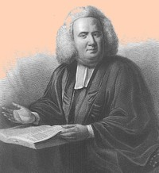

Reverend John Ogilvie
Scottish ancestry John Ogilvie (occasionally "Oglivie") was born in or near New York City in 1722 or 1724. His father, Lieutenant William, Ogilvie was a British army officer.
Young John was an appt student and graduated from Yale in 1748. His professional life began as a teacher and lay reader in New England. Expecting to be appointed an SPG missionary, he went abroad and was ordained in London in 1749. He returned to America and then, upon the recommendation of Reverend Henry Barclay, took up his post in Albany.
 He served as rector at St. Peter's Anglican church from 1749 to 1760. He is said to have been able to preach in Dutch. During the 1750s, he also served as a chaplain to the British army. After several years as a missionary at Fort Hunter and in Canada, in 1764 he would be named assistant minister of Trinity Church in New York. During that time, he occasionally supplied the pulpit of several parishes in the Hudson Valley.
The second part of Ogilvie's tenure in Albany came during the Seven Years War. His Albany home was a gathering place for English speakers while he instructed more than a hundred Dutch-speaking local children.
John Ogilvie married twice. He married Susanna Catharine Symes (daughter of another colonial British military family) in New York in September 1751. They had five children prior to her death - probably in 1769. He then married Margaret Marston, widow of manor lord Philip Philipse.
Fifty-year-old John Ogilvie was ill when he wrote his will in November 1774. It mentioned his second wife and a son and daughter. He died from a cerebral hemmorhage in New York City a few days later and was buried in the family vault in Trinity churchyard.
 Sources: The life of Rev. John Ogilvie is CAP biography number 8032. Perhaps he was named for the Jesuit Saint John Ogilvie! Ogilvie and resources related to him are subjects of a letter written by the New York State Historian in 1915. His church records from 1749, are the earliest we have encountered for St. Peter's. See also, "The diary of the Reverend John Ogilvie, 1750-1759" in Bulletin of the Fort Ticonderoga Museum, v. 10, no. 5 (1961); and An elegy on the death of the Reverend John Ogilvie, D.D.: Who departed this life the 26th of November, 1774, by "young Gentleman of this city." Probably the most substantial narrative profile (and bibliography) appears in the DCB.
Sources: The life of Rev. John Ogilvie is CAP biography number 8032. Perhaps he was named for the Jesuit Saint John Ogilvie! Ogilvie and resources related to him are subjects of a letter written by the New York State Historian in 1915. His church records from 1749, are the earliest we have encountered for St. Peter's. See also, "The diary of the Reverend John Ogilvie, 1750-1759" in Bulletin of the Fort Ticonderoga Museum, v. 10, no. 5 (1961); and An elegy on the death of the Reverend John Ogilvie, D.D.: Who departed this life the 26th of November, 1774, by "young Gentleman of this city." Probably the most substantial narrative profile (and bibliography) appears in the DCB.
Portrait painted by John S. Copley. Engraved and reproduced on the frontespiece of a history of Trinity church and in the Johnson Papers, vol 7, p. 800.
Will: In the name of God Amen. I, John Ogilvie, of New York, Doctor of Divinity, being at present very sick. “I leave to the Rector and Inhabitants of the city of New York, in communion of the Church of England, as by Law established, £300, for the use of the Charity School.” I leave to the Corporation for the Relief of widows and children of Clergymen in Communion of the Church of England in America, £100. “ I leave to the Governors of the College of the Province of New York, in the City of New York, £100.” I leave to my wife Margaret, “ my house and lands at Corlaers Hook, in New York, called the Garden, which I hold by lease from James De Lancey, Esq.,” and ¼ of all the rest of my estate. All the rest of my estate I leave to my son George and my daughter Mary. I make my wife and Nathaniel Marston and Augustus Van Cortlandt, executors. And they are to sell 2,000 acres of my land in the Patent of Waywanda in Orange County. Dated November 22, 1774, Proved, March 3, 1775. Printed in Abstract of Wills, vol.32, pp. 247-48.